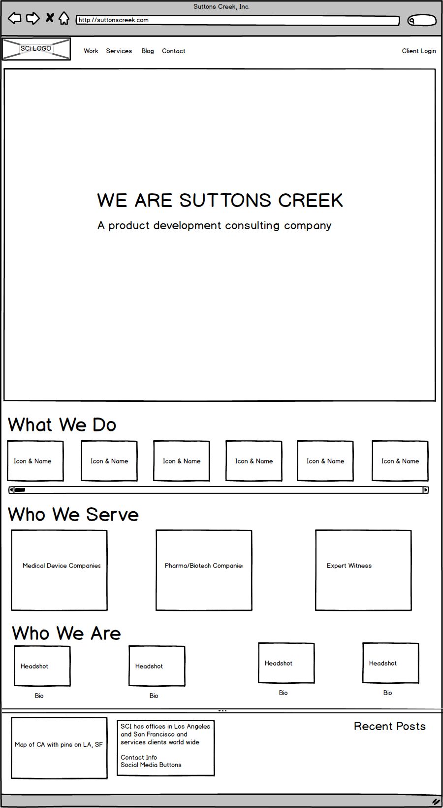
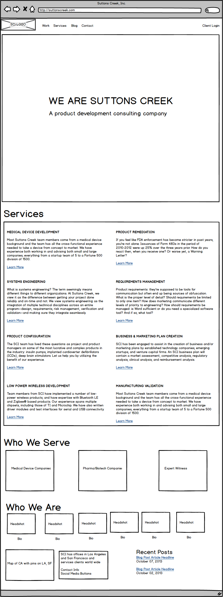

This is a page with a running list of links, updated with design deliverables as they're available.
The focus of this first bit of work is to explore and research a few different avenues, both for the content (via UX) and overall vibe (via visual design), to make sure we're on the same page before moving on to creating production-ready design deliverables.
Like I said on the phone, I'm fine with the overall structure of the existing site and the proposed wireframes, save for one exception: the home page is a bit dense for a visitor's initial impression, both for the live site and the initial Balsamiq wireframes. The wireframes actually increase the level of information density by introducing carousels (horizontal rotating sections).
All of the information and writing is useful, it just needs to be reformulated into a clear and strong visual hierarchy with one primary message and several supporting secondary ones, rather than having the eye bounce around and try to make sense of several things at once.
This is especially important because the demographics of your audience will change to a more impatient one as your business grows, because instead of having only visitors that already know who you are, you'll shift to an increasing number that don't know much about you and arrived at the site via word of mouth, organic traffic, or upcoming SEO campaigns. Which means the website will need to make a stronger initial impression about what the company does.
The two design tweaks I have in mind are to:
I’ve had great results with this split approach to home pages - with a large minimal section up top and denser secondary information below. I have two recent examples of this strategy from my work at Zapier, a workflow automation app. I redesigned their home page and increased the signup conversion rate by 18% after adding a showpiece banner area to fill the initial browser screen and moving the supporting material down below the fold. I also created an annual report with the same principles and it resulted in a good amount of tweets and other buzz on social media.
So, with that in mind, I created a wireframes variation of the home page with a home banner and more whitespace above the fold, and took the rest of the content from the previous wireframe and pushed it lower down on the page:

In addition to the big banner, I made a few minor changes from the original wireframe version: split the nav into two components to separate the main links for new visitors from the client login, changed "sectors" to the more generic "work" to match the more common verbiage for that content, and tweaked the marketing message.
Also, I noticed that the wireframes make liberal use of carousels, probably with the intention to solve the information density by focusing on one element at a time. Unfortunately, carousels have usability issues by hiding content and distracting the eye with animations. Carousels also tend not to perform very well - see the articles below for more data on conversion rates:
So, I made another variation with the same top banner and more scannable content without carousels:

If we're all on board with this approach, then we can concentrate on the other half of the work, which is the visual design.
So with those parameters in mind, I went looking for visual design samples that share the same ethos and compiled the list below.
I found a range of banner sizes for the home page, taking up anywhere from half of the browser window to covering it completely, like my Zapier pages. There’s an even greater variety of sizes and shapes of the secondary widgets.
Here’s several pages with banners on the home page that take up the entire browser viewport:
Notice the pattern between all of them: the full bleed banner makes the home page look and act as if it's a minimal and focused landing page, one that gets across the marketing headlines very effectively and has only a few UI elements to interact with, ensuring a high conversion rate. Yet, those that need to kick the tires and do more research simply have to scroll to see more content, without a page refresh. It's a very effective technique. Even Dropbox uses it.
Just to spice things up, here’s an architecture company’s site that has zero secondary content on the page itself, just a splash page with prominent contact info and links to other pages:
There’s a range of smaller banner sizes that still have an impact while making the secondary content more obvious and higher up on the page:
I’ve picked out out sites that use photographs as background elements, rather than cartoons or other lighthearted styles, but it’s worth considering a graphic/illustration-centric approach if it’s done in a clean and corporate manner, like with Coinbase for example.
It's also intentional that I've highlighted sites with giant photographs because it's not just a trendy design technique, the data says that larger images convert much better than smaller ones.
A note on language - I like the forceful “We are solvers” in Jared’s wireframes. Here's another example of a design with a strong main marketing headline that has a similar impact while also adding a little bit more info about the type of company:
And a last curveball idea - I found a few that use video as a background element, like I do on my personal site:
It’s worth noting that many of the sites are using Bootstrap, the same framework that Suttons Creek uses now and that I’ll be using during development, so we can make design decisions without any impact on implementation.
I know that’s a lot to digest, so let me be clear about the main things I’m looking for:
In addition, it’d also be helpful to hear any input from existing customers that could help guide language choices and marketing messages.
As for next steps, if everything above sounds good and it’s a green light, then I’ll make visual mockups that merge the UX layouts and design styles, which we can review on Friday.
{kind=link}
{kind=link}